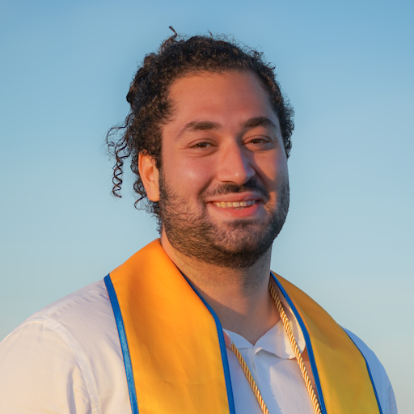

Hi, my name is Batuhan Salih. I am an open-source developer with a B.S. and M.S. in Computer Science from UC Santa Cruz (UCSC). During my time in UCSC my work focused on educational technologies, from research on explainable automated grading at the AIEA Lab under Dr. Leilani Gilpin to open-source contributions at Edulinq under the guidance of Dr. Eriq Augustine and Dr. Lise Getoor. I care about quality, simplicity, and purpose in software. I believe in solving real problems, not building solutions in search of one.